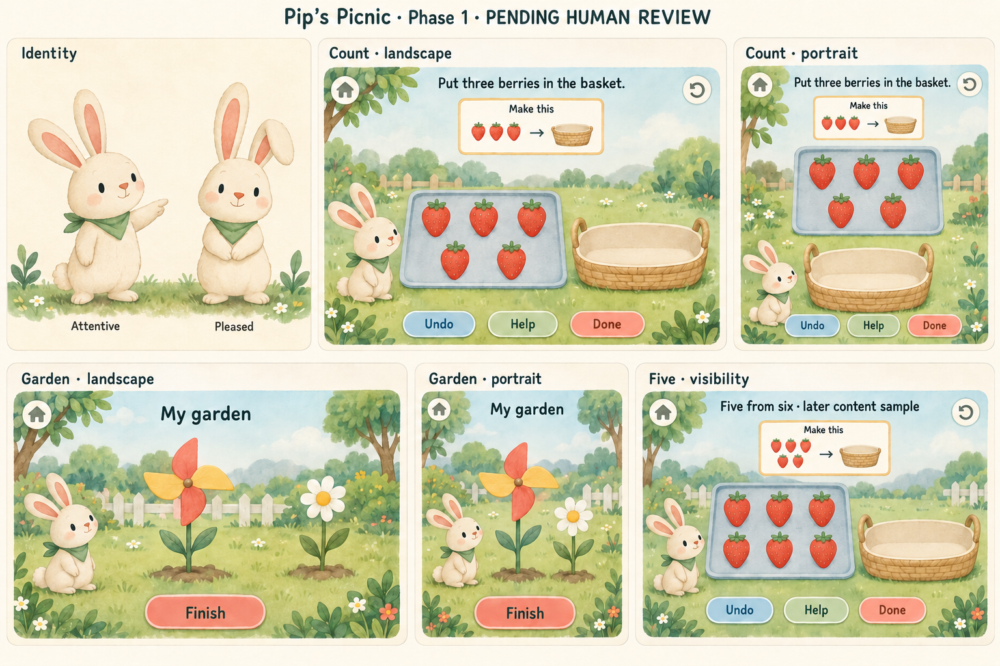
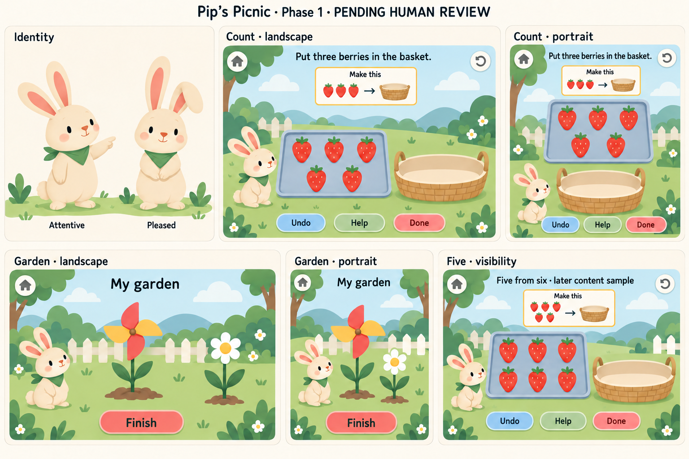

A · Warm paper
Tactile watercolor, soft paper grain and a richer storybook garden.


Pip’s Picnic is a working concept. Compare the same rabbit, three-from-five activity and garden toys in two styles. These are visual and motion samples for a future native iPad app.
PENDING HUMAN REVIEW · PHASE 1 ONLYTactile watercolor, soft paper grain and a richer storybook garden.

Broad shapes, quieter scenery and clearer separation around the math pieces.

Recommendation: develop B after your review. Its quieter scenery gives the movable berries stronger separation. A remains an appealing alternative if paper warmth matters more. The boards do not select the theme, character or rendering method on your behalf.
The framed miniature set shows three berries moving toward a basket. The five larger berries are the working set; the reference is separate and noninteractive. Landscape places source and basket side by side. Portrait stacks them. This is shown-set construction; the sample does not establish numeral recognition or abstract number recall.
Boards are flattened 1536 × 1024 concept sheets. Their panels illustrate reflow, not exact device geometry, touch bounds or native accessibility. Final poses, environment layers, basket front/back and toy pivots remain future asset work.
A short silent schematic isolates object identity and quantity conservation. It is independent of either art style. Play once, then compare the immediate-position Reduced Motion version.
Study notes and source · Key frames
Timing and layer choices are provisional. The semantic state owns moves/completion/rewards; motion is a presentation. Native integration and device feel have not been tested.
Ten audition recordings are missing. Natural cloud speech could not run because credentials are unavailable. Cedar and Marin are proposed candidates; their ten exact requests and a listening worksheet are ready. No voice has been heard, scored or selected.
| Catalog line | Exact text for both candidates |
|---|---|
| VO-WELCOME | Hello! Let’s get our picnic ready. |
| VO-COUNT-BERRY-03 | Put three berries in the basket. |
| VO-COUNT-TOO-MANY | There are too many. Tap a piece in the basket to give it back. |
| VO-JOIN-TOTAL | How many are on the shared mat? Choose a number. |
| VO-BYE | Bye for now. Your garden will be here. |
Audition/listening sheet · Ten-request manifest · Specific capability gap and checks
Both original white-label takes are retained. Current review takes use dark Finish lettering. Replay icon semantics and final layer exports remain open. Human art, wording, listening and provider/rights decisions are separately pending.